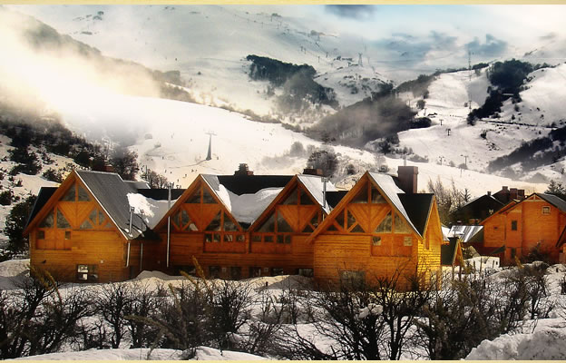

Al Pie del Cerro Catedral
Una ubicación privilegiada

Cabañas Aquelarre Catedral se halla ubicado al pie del Cerro Catedral, —Bariloche, Argentina— a metros de la base: Complejo de Ski y a solo quince minutos del centro de San Carlos de Bariloche.